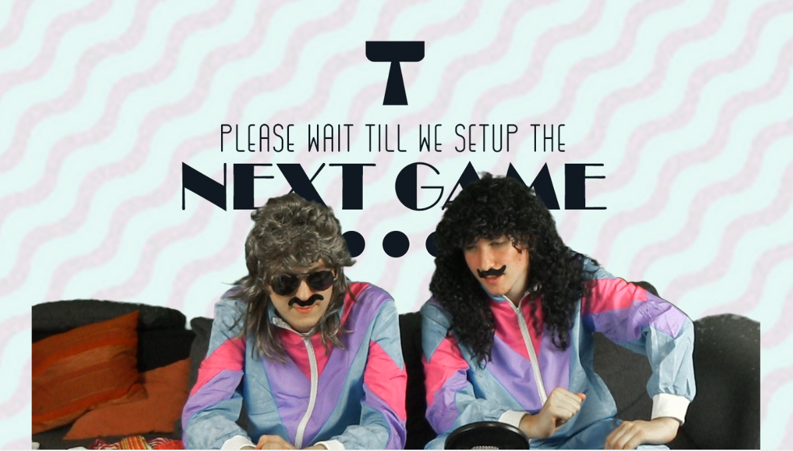
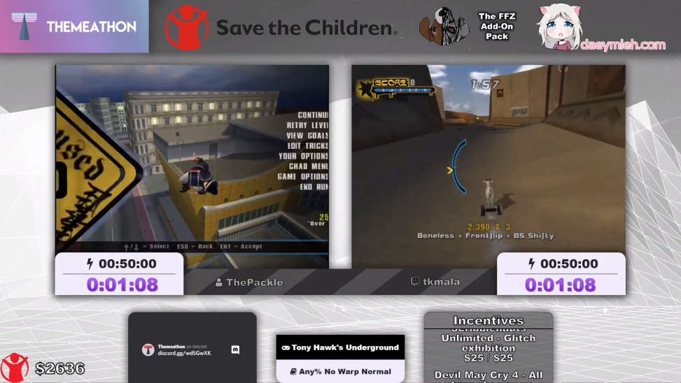
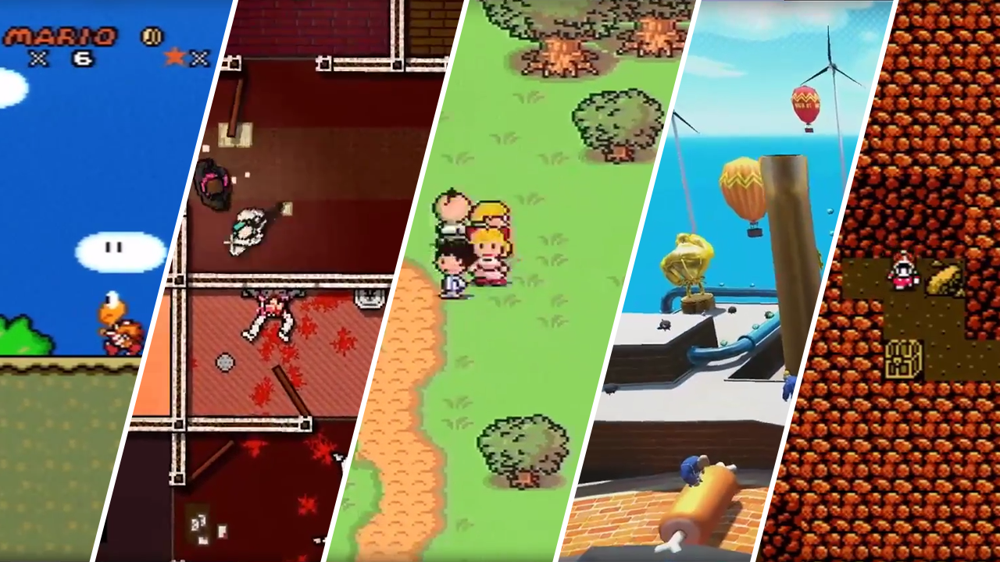

<div [class.app-dark-theme]="true">
    <mat-sidenav-container fullscreen class="sidenav-container">
        <mat-toolbar class="toolbar">
            <div class="social-media" id="discord" (click)="navigateToDiscord()">
                
                <!--<div class="social-media-text">Discord</div>-->
            </div>

            <div class="social-media" (click)="navigateToTwitch()">
                
                <!--<div class="social-media-text">Twitch</div>-->
            </div>

            <div class="social-media"(click)="navigateToTwitter()">
                
                <!--<div class="social-media-text">Twitter</div>-->
            </div>

            <div class="social-media" (click)="navigateToYoutube()">
                
                <!--<div class="social-media-text">YouTube</div>-->
            </div>
        </mat-toolbar>

        <mat-card class="about-card">
            <mat-card-header class="about-header">
                
                <h1 class="header-text">What is Themeathon?</h1>
            </mat-card-header>  <br> <br>

            <mat-card-content class="about-content">
                
                <div class="section-1">
                    Themeathon is a charity marathon created by
                    <a class="link-text" target="_blank" href="https://twitter.com/Lordmau5">Lordmau5</a> and
                    <a class="link-text" target="_blank" href="https://twitter.com/JugachiHD">Jugachi</a> in late 2016. <br> <br>

                    The main focus of the marathon is speedrunning, the art of finishing video games as quickly as possible.<br> <br>

                    Themeathon will be held online so anyone who wants to submit a speedrun can easily be a part of the marathon.<br> <br>

                    All money raised is going directly to the <a class="link-text" target="_blank" href="http://www.savethechildren.org">Save The Children Foundation</a>. <br> <br>

                    At the first Themeathon we raised a total of $4759, have raised over $15000 overall, and we only hope to grow from there!
                </div>
                
                <div class="section-2-outer">
                    <div class="section-2">

                        <h2 class="subheading">HERE'S THE TWIST!</h2>

                        What makes Themeathon unique is that we have a theme for every marathon. <br> <br>

                        During the downtime between runs, we will do our very best to entertain the entire audience, acting out the theme and providing
                        consistent fun for the entire marathon! The stream layout, alerts, and website will be re-themed for every marathon as well. We go all out! <br> <br>
                        One thing we don't restrict is the breadth of games we'll accept for the marathon, so runners don't have to worry about restricting themselves
                        to the theme. <br> <br>

                        The theme for Themeathon 2018 will be announced after the premarathon!
                    </div>
                    
                </div>
                


                <div class="section-3">

                    <h2 class="subheading">WHEN IS IT? WHERE IS IT?</h2>

                    The dates for Themeathon 2018 will be announced soon! <br> <br>

                    For now the marathon will be solely online, however we aren't ruling out a live event for the future!<br> <br>

                </div>

                

                <div class="section-4">
                    <h2 class="subheading">WANT TO PARTICIPATE?</h2>
                    We love all of our runners! In order to make Themeathon a great and <br> <br>
                    successful marathon it not only requires an organized staff but also as many participants <br> <br>
                    as possible to show the world how much gamers can do for good! <br> <br>

                    The Themeathon staff doesn't earn anything from this, nor do we ever want to.
                </div>

            </mat-card-content>

            <mat-card-actions>
                <button mat-raised-button class="submit-button" (click)="openSubmitDialog()">
                    Submit a Run
                </button>
            </mat-card-actions>
        </mat-card>
    </mat-sidenav-container>
</div>